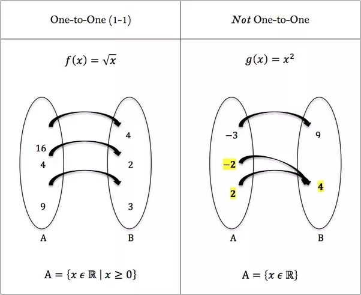
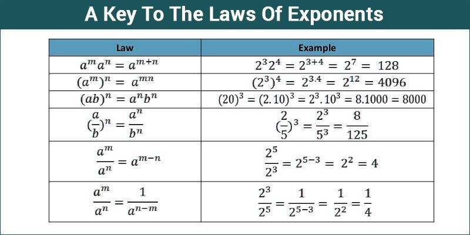

EXPONENTIAL AND LOGARITHMIC FUNCTIONS
- Composite Functions: Given f and g are two functions the composite function is denoted by(f o g)(x)=f(g(x)).
Evauating a composite function
Suppose that f(x)=2x2-3 and g(x)=4x. Find (f o g)(1)
(f o g)(1) = (f(g(1)) = f(4) = 2 . 4 2 - 3 = 29
Finding a composite function and its domain
Suppose that f(x)=x2+3x - 1 and g(x)=2x+3. Find (f o g). Then find the domain of each composite function
(f o g)(x) = (f(g(x)) = f(2x+3) = (2x + 3) 2 +3(2x+3)-1= 4x2+12x +9 +6x +9 - 1= 4x2 +18x +17
- ONE TO ONE FUNCTIONS

- INVERSE FUNCTION
The graph of a function f and the graph of its inverse f-1 are symmetric with respect to the line y=x.

- EXPONENTIAL FUNCTIONS

An exponential function is a function of the form f(x)= Cax where a is a positive real number and a is not equal to 1, C is not equal to 0 and is a real number. The base a is the growth factor, and because f(0)=Ca0=C, we call C the inital value.
Properties of the Exponential Function f(x)= ax,"0 < a < 1
- The domain is the set of all real numbers; the range is the set of positive real numbers.
- There are no x-intercepts; the y-intercept is 1.
- The x-axis is a horizontal asymptote
- f(x)= ax, 0 < a < 1, is one to one and is a decreasing function
- The graph of f contains the points (0,1), (1,a) and (-1,1/a)

- LOGARITHMIC FUNCTIONS
The logarithmic function to the base a where a > 0 and not equal to 1, is denoted by y=logax.
Properties of the Logarithmic Function f(x)= logax
- The domain is the set of positive real numbers; the range is the set of all real numbers.
- There are no y-intercepts; the x-intercept is 1.
- The y-axis is a vertical asymptote of the graph
- The logarithmic function is decreasing if 0 < a < 1 and is increasing if a > 1
- The graph of f contains the points (1,0), (a,1) and (1/a,-1)
LOGARITHMIC FUNCTION GRAPH